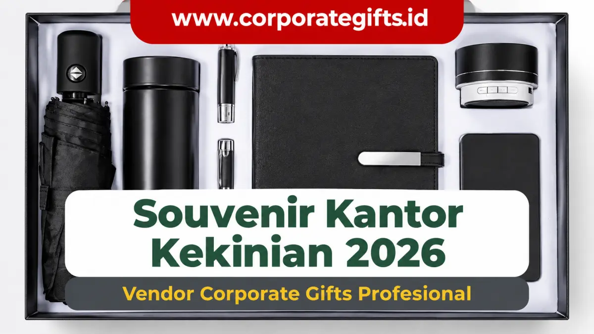

Corporate Gifts ID - Souvenir kantor bukan lagi sekadar barang pelengkap seremonial yang dibagikan tanpa makna. Di era korporasi modern tahun 2026, cinderamata perusahaan telah berevolusi menjadi instrumen strategis untuk memperkuat loyalitas internal (employee engagement), merekatkan relasi kemitraan B2B, serta membangun identitas brand yang berwibawa di mata publik.
Dominasi tren saat ini bergeser ke arah produk yang fungsional, berkelanjutan (eco-friendly), dan memiliki sentuhan estetika minimalis modern. Dari tumbler berinsulasi vakum hingga perangkat gadget nirkabel, ragam pilihan souvenir kantor siap kustomisasi dapat diselaraskan dengan plafon anggaran mulai dari belasan ribu rupiah hingga ratusan ribu rupiah per paket.
Poin Kunci Tren Souvenir Kantor Kekinian 2026:
- Keberlanjutan Lingkungan: Preferensi tinggi terhadap material daur ulang, bambu alami, dan produk bebas plastik sekali pakai.
- Integrasi Gaya Kerja Digital: Permintaan meningkat untuk powerbank wireless, USB kartu tipis, serta kabel data multifungsi.
- Branding Elegan & Minimalis: Penggunaan teknik grafir laser presisi dan emboss timbul menggantikan sablon mencolok.
- Efisiensi Anggaran Berbasis Nilai: Investasi pada barang yang awet menghasilkan eksposur merek jangka panjang yang jauh lebih tinggi.
Pergeseran Paradigma Souvenir Kantor Modern
Dahulu souvenir kantor identik dengan pulpen plastik murahan atau kalender dinding yang kerap terabaikan. Kini, para pengambil keputusan di divisi HR, Marketing, dan Procurement menyadari bahwa mutu cinderamata mencerminkan bagaimana sebuah institusi menghargai penerimanya.
Memberikan souvenir yang benar-benar dipakai dalam aktivitas harian menciptakan ikatan emosional mendalam sekaligus memberikan eksposur organik berkelanjutan di meja kerja, ruang rapat, maupun ruang publik.
5 Tren Utama Souvenir Kantor Kekinian 2026
Berikut lima arah tren produk yang paling diminati perusahaan terkemuka dan instansi BUMN tahun ini:
- Souvenir Ramah Lingkungan (Eco-Friendly Sustainability): Pilihan produk berbasis katun blacu organik, serat bambu, gandum (wheat straw), serta kayu daur ulang yang mendukung inisiatif ESG (Environmental, Social, and Governance).
- Perangkat Teknologi & Mobilitas Digital: Mendukung ritme kerja fleksibel (hybrid working) lewat gadget praktis seperti power bank fast-charging 10.000 mAh, wireless charger pad, TWS bluetooth earphone, dan flashdisk kartu.
- Kustomisasi Desain Eksklusif: Personalisasi nama penerima menggunakan grafir laser pada tumbler stainless atau emboss emas pada buku agenda kulit sintetis.
- Paket Gift Set Premium (Curated Box): Bingkisan tematik yang menggabungkan beberapa produk serasi dalam balutan hardbox magnetik dengan tatakan busa EVA presisi.
- Merchandise Fungsional Harian: Barang esensial meja kantor seperti mug keramik custom, payung lipat otomatis, dan pouch kabel organizer tahan air.

Paket hampers souvenir kantor kekinian memadukan payung otomatis, tumbler termal, agenda, pulpen metal, powerbank, dan speaker bluetooth dalam hardbox eksklusif.
5 Kategori Jenis Souvenir Kantor dan Nilai Fungsinya
Setiap jenis cinderamata memiliki peruntukan strategis yang berbeda tergantung target audiens:
- Souvenir Custom Branding: Notebook jilid spiral, lanyard printing ber-ID holder, dan gantungan kunci akrilik untuk identitas korporat menyeluruh.
- Souvenir Ramah Lingkungan: Totebag kanvas, tumbler stainless vacuum flask SUS 304, dan cutlery set kayu untuk mendukung gaya hidup bebas sampah.
- Souvenir Digital & Aksesoris IT: USB flashdisk custom, mouse pad ergonomis, serta kabel charger 3-in-1 untuk kemudahan kerja mobile.
- Souvenir Keseharian Praktis: Payung lipat anti-UV, pouch kanvas kosmetik/alat tulis, dan botol minum olahraga untuk event luar ruangan.
- Souvenir Eksekutif VIP: Plakat akrilik/kayu kombinasi logam kuningan, pen holder meja kayu jati grafir, serta gift box set kulit premium.
Tabel Komparasi Tingkatan Souvenir Kantor Kekinian
Berikut rangkuman struktur harga, komposisi barang, dan segmentasi peruntukannya:
| Tingkatan Souvenir | Kisaran Harga per Unit | Pilihan Item Populer | Rekomendasi Target Penerima |
|---|---|---|---|
| Ekonomis & Massal | Rp10.000 - Rp35.000 | Pulpen plastik custom, notes softcover, goodie bag spunbond, gantungan kunci | Peserta seminar massal, expo pameran, audiens festival publik |
| Fungsional Menengah | Rp40.000 - Rp150.000 | Tumbler stainless steel, totebag kanvas, powerbank slim, payung lipat, agenda hardcover | Karyawan onboarding, gathering internal, peserta pelatihan sertifikasi |
| Eksklusif & VIP | Rp200.000 - Rp500.000+ | Gift set kulit 3-in-1, speaker bluetooth, plakat penghargaan mewah, ransel laptop | Klien VIP B2B, dewan komisaris, narasumber utama, mitra strategis |
5 Tips Cerdas Memilih Souvenir Kantor bagi Perusahaan
- Petakan Profil Penerima: Bedakan merchandise untuk karyawan internal generasi muda dengan cinderamata bagi jajaran direksi senior.
- Prioritaskan Nilai Utilitas: Pilih barang yang memiliki fungsi jelas agar tidak berakhir menumpuk di laci meja.
- Pertahankan Standar Desain Minimalis: Hindari penempatan logo yang terlalu besar; gunakan aksen logo yang proporsional dan elegan.
- Hitung Skala Pengadaan: Memesan dalam volume grosir di atas 100-500 unit membuka peluang diskon harga produksi yang substansial.
- Validasi Sampel Fisik: Selalu minta visual mockup gratis atau sampel produk sebelum menyetujui cetak massal.
Struktur Harga dan Panduan Kerjasama Vendor
Untuk memastikan pengadaan berjalan lancar tanpa kendala tenggat waktu, bermitralah dengan vendor tangan pertama yang memiliki kapabilitas produksi terintegrasi. CorporateGifts.ID menyediakan alur pengadaan profesional dengan dukungan invoice resmi B2B, packaging custom, dan garansi kualitas pengiriman ke seluruh pelosok tanah air.